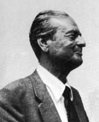

Che cos'è la probabilità?
L'invenzione dell'incertezza: dal gioco d'azzardo alla mente
L'innesco del dubbio
Lanci una moneta in aria.
Qual è la probabilità che esca Testa?
Per l'uomo: 50%
Per il supercomputer: 100% o 0%
La probabilità è una proprietà della moneta, o la misura della nostra ignoranza?
Andrej Kolmogorov

Gli assiomi spiegano come sommare e moltiplicare numeri tra 0 e 1.
Non dicono cosa significhino nel mondo reale.
Wesley Salmon
1. Ammissibile
Rispetta gli assiomi matematici
2. Accertabile
Misurabile empiricamente nel mondo
3. Applicabile
Guida razionale per l'azione
Nessuna interpretazione li soddisfa tutti contemporaneamente!
Il grande bivio
Polo Epistemico
La probabilità è nella mente.
Misura della conoscenza parziale
Laplace • de Finetti
Polo Ontico
La probabilità è nella materia.
Proprietà fisica del mondo esterno
von Mises • Popper
Pierre-Simon Laplace

Principio di Indifferenza: in assenza di prove, tutti gli esiti sono equiprobabili ($1/N$).
Nel determinismo newtoniano il caso non esiste: misura solo la nostra ignoranza.
Limite: collassa negli spazi continui (Paradosso di Bertrand).
Bruno de Finetti

«LA PROBABILITÀ NON ESISTE»
Esiste solo il grado di fiducia coerente del decisore.
Nessuna proprietà oggettiva nella moneta: solo la stima razionale con cui un agente scommette coerentemente sul futuro.
Richard von Mises
Il Collettivo (Kollektiv): $P(A) = \lim_{N \to \infty} \frac{n_A}{N}$ su prove identiche ripetibili.
Vicolo cieco: muto sul caso singolo! La moneta fusa nella fornace dopo un lancio, o gli eventi storici unici.
Karl Popper

Propensione: una reale tendenza fisica dell'apparato sperimentale a produrre l'evento.
Paradosso di Humphreys: la causalità va solo avanti nel tempo; gli assiomi probabilistici invertono la freccia temporale.
9 Teste, 3 Croci
Stessi identici dati fisici sul tavolo.
Alice (N = 12 fisso)
p = 0.073
Accetta l'equità ($p > 0.05$)
Bob (r = 3 croci)
p = 0.033
Rifiuta l'equità: truccata! ($p < 0.05$)
Principio di Verosimiglianza
$$P(\text{Dati} \mid p) \propto p^9 (1-p)^3$$
Usiamo direttamente la $P$ invertita (probabilità dei dati condizionata al parametro).
I dati fantasma non contano. La funzione $P(\text{Dati} \mid p)$ è identica per Alice e Bob!
Pluralismo Pragmatico
📊 Big Data & Log di Rete: Frequentismo (limiti stabili, grandi numeri).
🛡️ Cybersecurity & Eventi Rari: Bayesianesimo (prior razionali, stima dell'incertezza).
⚠️ A/B Testing: Mai fare "peeking" come Bob senza correggere il campionamento!